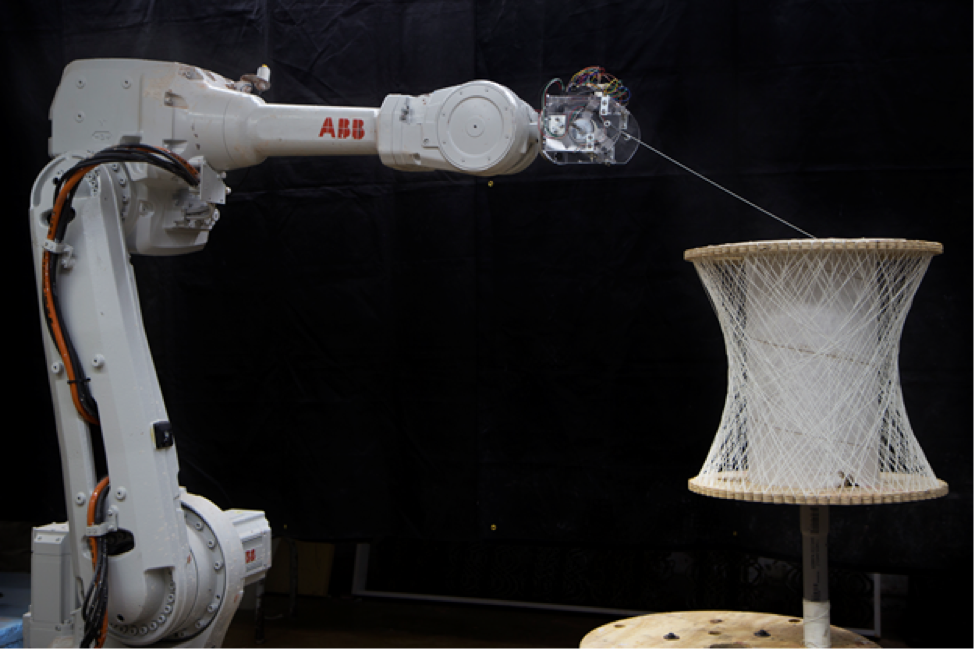

Ben Norman
As a senior majoring in Computer Science at Cornell University with a concentration in Machine Learning and a minor in Music, I am pursuing full time positions utilizing my machine learning and software design skills as applied to my interests including government, medical analytics, robotics, design and music. Here is a link to resume. This website showcases some of my projects.
Refering Expressions
Description
Semantically Aware Objective Functions for Referring Expression Tasks is the culmination of a semesters work in PhD classes CS 6670 Computer Vision and CS 6784 Advanced Topics in Machine Learning taught by Barath Harihardan and Kilian Weinberger respectively. I partnered up with three of my friends to improve on the Referring Expressions task. The task is, given an image and a region of the image, generate an unambiguous expression. We greatly improved on our baseline by comparing the sementaic meaning of expressions during training. The code can be found: here
Abstract
We propose a set of objective functions that can be used for any text generation task. These functions utilize recent work on high-quality word embeddings to gain an awareness of semantics. We show their ability to improve performance on the Referring Expression task. Link to short paperAudio Feature Extraction
Description
For our Artificial Inteligence Practicuum, our team used Google Magenta's audio autoencoder to extract high quality features of a large music collection. We used these feature vectors to find an artist's "average song", perform analagous reasoning tasks such as Old Man - Neil Young + The Beatles = Julia and find the most similar and dissimilar artists. Here is a link to the jupyter notebook.
Lab Work
My interest in generative design and computer science lead me to the Jenny Sabin Design Lab at the end of my sophomore year. The lab encourages interdisciplinary collaboration among a small group of undergraduate architecture, computer science, electrical and materials engineers.
RoboSense
I have worked closely with two architects over the last year developing software that permits architects to initialize and control dynamic fabrication environments with a 6 axis robot and arduino end effectors. This is a photo of a MOMA PS1 spool weaving end effector that uses a stepper motor and load sensor to maintain consistent tension.
Kirigami Simulation
I produced Unity simulations of kirigami geometry designed by the architects of the lab. We published a paper in SimAUD 2017 that explores the possibilities of kirigami geometry — folding with the addition of strategically placed cuts and holes — through simulation and kinetic and adaptive architectural assemblies. Here is a link to the paper.


Other Stuff
I also like making things...